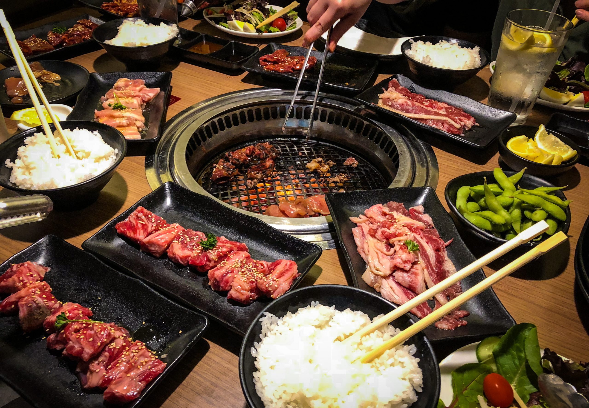
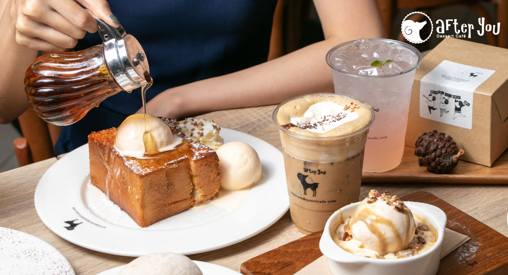

Take a tour with me!
I spent almost 7 years in the capital city of Thailand, Bangkok. Mostly to study. There are many go-to restaurants I want to recommend.
- MK restaurant
- AKA Korean grill 
- After You Cafè & Dessert 

MK is one of the most famous chained restaurant in Thailand. They serve Chinese-Thai cousines in a good price. The place is family-friendly and suits for small to medium gatherings.
If you love grilled meat, AKA is a must-go!
Are you a sweettooth? After You Cafè is known for their famous Hokkaido Honey Toast and freshly brewed coffee.